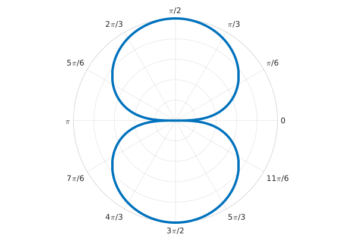
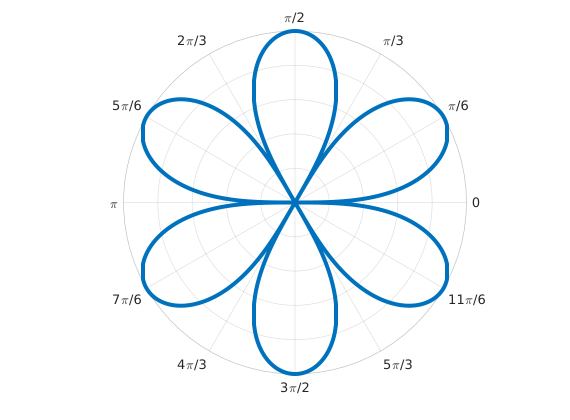
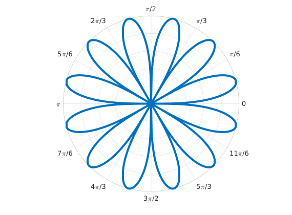

How many petals does $r=\sqrt{|\sin(n\theta)|}$ have for $\theta\in[0,2\pi]$ and a positive integer $n$? I saw this question on reddit a while back and I typed out a quick sketch of a proof on my phone in the comments there, but I wanted to do something a little more formal here. While thinking about this problem I generated the images below which made me intuitively think that the answer was $2n$, so why not claim this is true and try to prove it.

$n=1$

$n=3$

$n=6$
Claim. $r=\sqrt{|\sin(n\theta)|}$ has $2n$ petals.
Proof. From the graphs above, we can see that petals are only formed when $\sqrt{|\sin(n\theta)|}$ becomes zero. We can imagine starting from the origin and tracing out the petal shape so that we arrive back at the origin. Therefore we must be at the origin $2n+1$ times to form $2n$ petals (it is $2n+1$ instead of $2n$ because we always start at $\theta=0$, and $\sin(0)=0$). We have equated the problem of finding the number of petals with finding the number of zeros of our function, and proving one will also prove the other.
We will first make some simplifications that will make it easy for us to see when our function becomes zero. Suppose $f(\theta)=\sqrt{|\sin(n\theta)|}$ and that $f(c)=0$ for some $c\in[0,2\pi]$. Then it must be the case that $f^2(c)=0$. So now let's look at $f^2(\theta)=|\sin(n\theta)|$. Suppose $f^2(d)=0$ for some $d\in[0,2\pi]$. The only way for this to occur is if $\sin(n\theta)=0$. So now instead of finding the zeros of the more complex function $f$, we can instead find the zeros of the simpler expression $\sin(n\theta)$.
In general, the zeros of $\sin\alpha$ occur when $\alpha=m\pi$ for some $m\in\mathbb{Z}$. In our case, $\alpha=n\theta$, so $\theta = \frac{m\pi}{n}$. Since $m$ can be any (positive) integer, we know at the very least that when $\theta$ is $0$ $(m=0)$ or $2\pi$ $(m=2n)$, $f$ will be zero. We can then work backwards from this information and find the remaining values of $m$ that will also make $f$ zero. Let's try listing some of these multiples to get a better idea of what we're dealing with:
$$
\left\{ 0, \frac{\pi}{n}, \frac{2\pi}{n}, \frac{3\pi}{n}, \dots, 2\pi-\frac{2\pi}{n}=\frac{(2n-2)\pi}{n}, 2\pi-\frac{\pi}{n}=\frac{(2n-1)\pi}{n}, 2\pi \right\}
$$
The cardinality of this set is the number of zeros of $f$, which we can see is $2n+1$. $\Box$